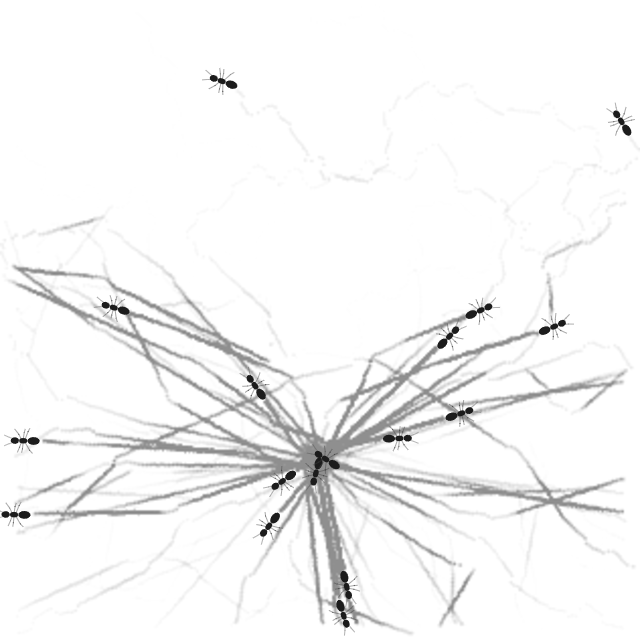
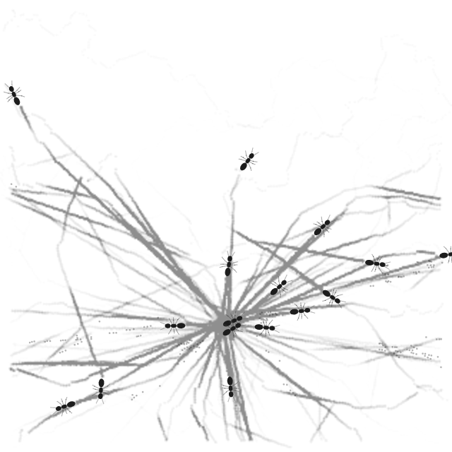
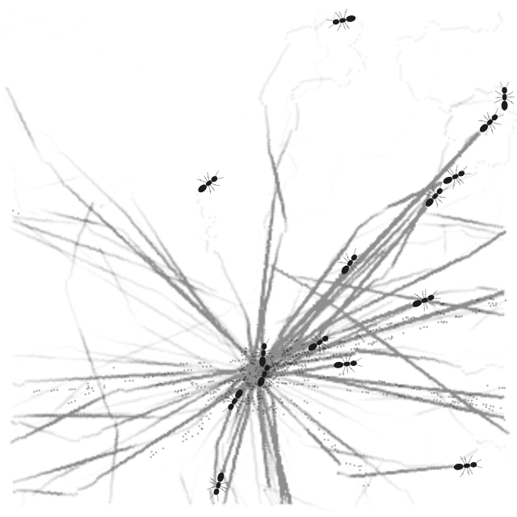
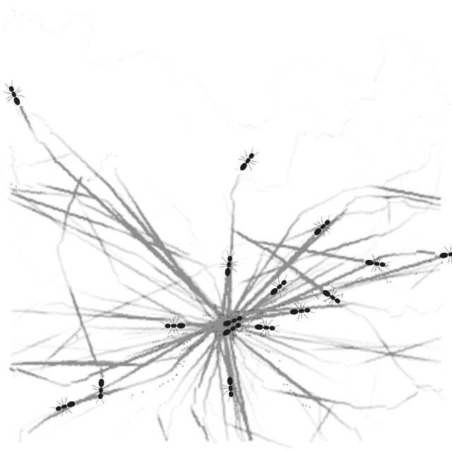

<!doctype html>
<html lang="ko"><meta charset="utf-8"><meta name="viewport" content="width=device-width,initial-scale=1">
<title>ANT visual review</title>
<style>body{font:16px system-ui,sans-serif;margin:24px;color:#202124;background:#fff}main{max-width:1320px;margin:auto}.views{display:grid;grid-template-columns:repeat(2,minmax(0,1fr));gap:16px}video{display:block;width:100%;aspect-ratio:1;background:#fff}.stills{display:grid;grid-template-columns:repeat(3,1fr);gap:8px}.stills img{width:100%}textarea{width:100%;min-height:110px;margin-top:8px;box-sizing:border-box;font:inherit}@media(max-width:760px){.views{grid-template-columns:1fr}}</style>
<main><div class="views"><section><h2>View 1</h2><video controls muted playsinline preload="metadata" src="./media/view-1.webm"></video><details><summary>Stills</summary><div class="stills"><figure><figcaption>Still 1</figcaption></figure><figure><figcaption>Still 2</figcaption></figure><figure><figcaption>Still 3</figcaption></figure></div></details></section><section><h2>View 2</h2><video controls muted playsinline preload="metadata" src="./media/view-2.webm"></video><details><summary>Stills</summary><div class="stills"><figure><figcaption>Still 1</figcaption></figure><figure><figcaption>Still 2</figcaption></figure><figure><figcaption>Still 3</figcaption></figure></div></details></section></div><p>무엇이 달라 보이고, 어떤 점이 자연스럽거나 이상하게 느껴졌는지 자유롭게 적어 주세요.</p><textarea aria-label="자유 응답"></textarea></main>
<script>const a=document.querySelector(".views section:nth-child(1) video"),b=document.querySelector(".views section:nth-child(2) video");let lock=false;for(const [v,o] of [[a,b],[b,a]]){v.addEventListener("play",()=>{if(!lock)o.play().catch(()=>{})});v.addEventListener("pause",()=>{if(!lock)o.pause()});v.addEventListener("seeking",()=>{if(!lock){lock=true;o.currentTime=v.currentTime;lock=false}})}a.addEventListener("timeupdate",()=>{if(!lock&&Math.abs(a.currentTime-b.currentTime)>.12){lock=true;b.currentTime=a.currentTime;lock=false}});</script>
</html>